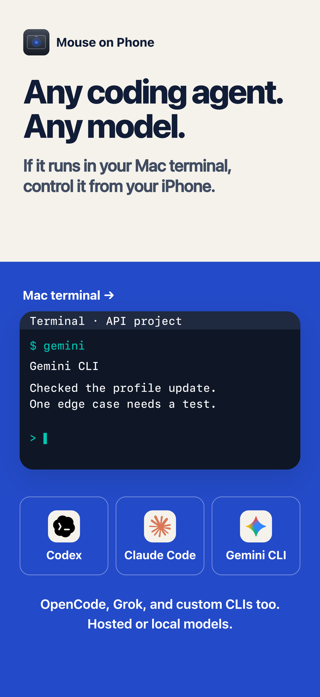

Control your Mac from your iPhone.
Use your iPhone as a trackpad and keyboard. See your Mac screen, check a build, or type into the terminal on the same Wi-Fi network.
iOS 1.0 · Released 2026-11-06
Mac 1.0 · Released 2026-10-21
All releases

Install and pair
Install Mouse on Phone on both devices. Keep your Mac awake and connect both devices to the same Wi-Fi network. Mouse on Phone requires no sign-up.
On your Mac
- Download the free Mac companion. It requires macOS 14 or later.
- Open the ZIP file, move Mouse on Phone to Applications, and open it.
- Allow Accessibility for pointer and keyboard control. Allow Screen Recording if you want Live View or a second display.
- Click Pair New iPhone to show the QR code.
On your iPhone
- Install Mouse on Phone from the App Store. It requires iOS 16 or later.
- Open the app and tap Scan Pairing Code. Allow camera and local network access when asked.
- Scan the code displayed on your Mac. Move your finger on the iPhone trackpad to check the connection.
Use the FAQ to set up an iPad over Bluetooth or get help with pairing.
Remote setup with Tailscale
Use compatible iPhone and Mac beta builds to test remote access. The public release uses the same Wi-Fi network.
- Install Tailscale on your Mac and iPhone. Sign in to the same Tailscale network on both devices and connect them.
- Keep your Mac awake and open Mouse on Phone. When the Mac detects Tailscale, click Test Tailscale Pairing.
- Open Mouse on Phone on your iPhone and scan the Mac’s test QR code.
- Check pointer movement or open your Mac screen from the iPhone. To test away from Wi-Fi, leave Tailscale connected, switch the iPhone to cellular, and repeat the check.
If Test Tailscale Pairing is unavailable, use the same Wi-Fi setup.
Coding agent preview
The screenshots use demo sessions. Agent Inbox actions depend on the agent and session you use.


What you can use today
- A full-screen trackpad with Mac gestures and Force Touch.
- Keyboard, media keys, custom panels, apps, and menus.
- Live View and a second display for your Mac.
- Bluetooth mouse and keyboard control for your iPad.
The public release has no analytics or cross-app tracking. Read the privacy policy and support guide.